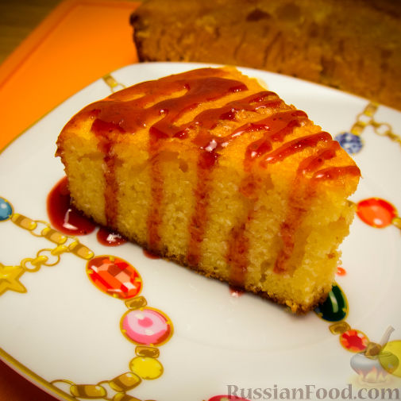

Классический манник на молоке

Вкусный, воздушный и нежный манник на молоке, от
которого невозможно оторваться!
Продукты(на 6 порций)
- Круппа манная - 1,5 стакана
- Молоко - 1 стакан
- Сачар 1 стакан
- Яйцо - 3 шт
- Масло сливочное - 50г
- Разрыхлитель - один пакетик
- Соль - 1 щепотка
Рецепты изделий из теста